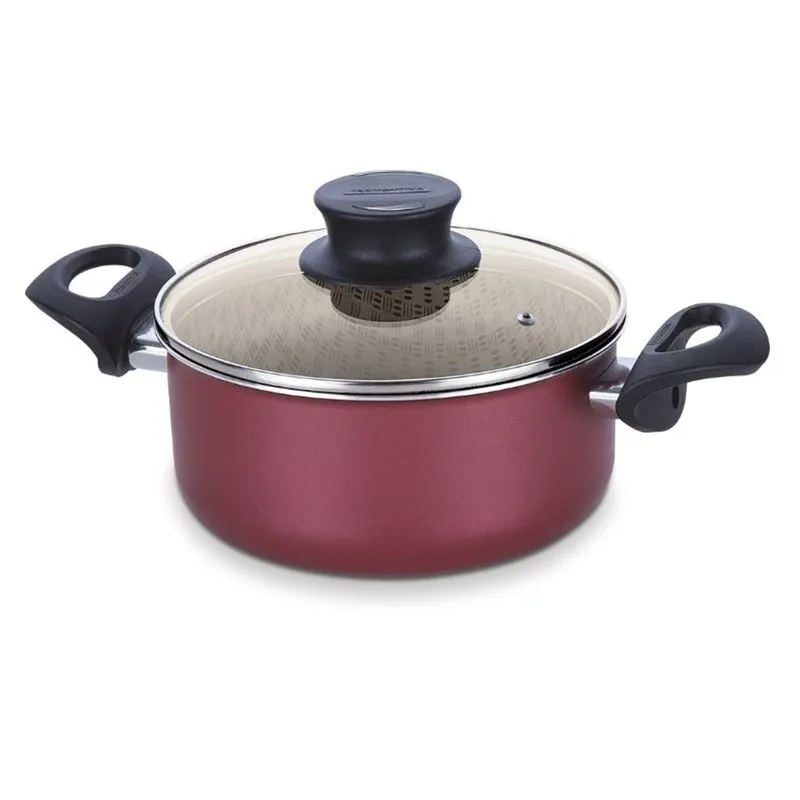

Panela de aço inox
Durável, elegante e ideal para cozinhar uniformemente.
Descubra panelas resistentes, fáceis de limpar e perfeitas para sua cozinha.
Da feijoada ao risoto, encontre panelas ideais para cada receita e cada estilo de cozinha.
Ver panelas
Durável, elegante e ideal para cozinhar uniformemente.
Perfeita para frituras leves e limpeza rápida.
Distribui calor bem e deixa seus pratos com acabamento gourmet.
Uma panela de qualidade transforma a experiência na cozinha, mantém o sabor dos alimentos e facilita o preparo de receitas saudáveis e saborosas.